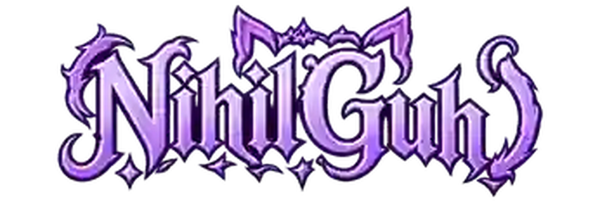

TRANSMISSÃO
● AO VIVO
Tempo restante04:00:00
Comunidade+0 min
Tempo total4h

Lives, jogos e caos. Um pequeno buraco de coelho na internet onde a própria comunidade consegue estender a transmissão.
Se você caiu aqui fora da live, o Discord é onde o caos continua. A Coret.cloud é o outro canto da comunidade.
Apoios e desafios da comunidade podem jogar mais minutos no relógio da live.